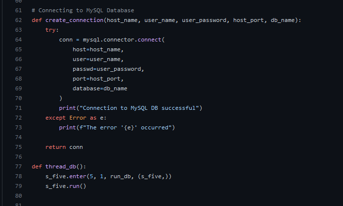
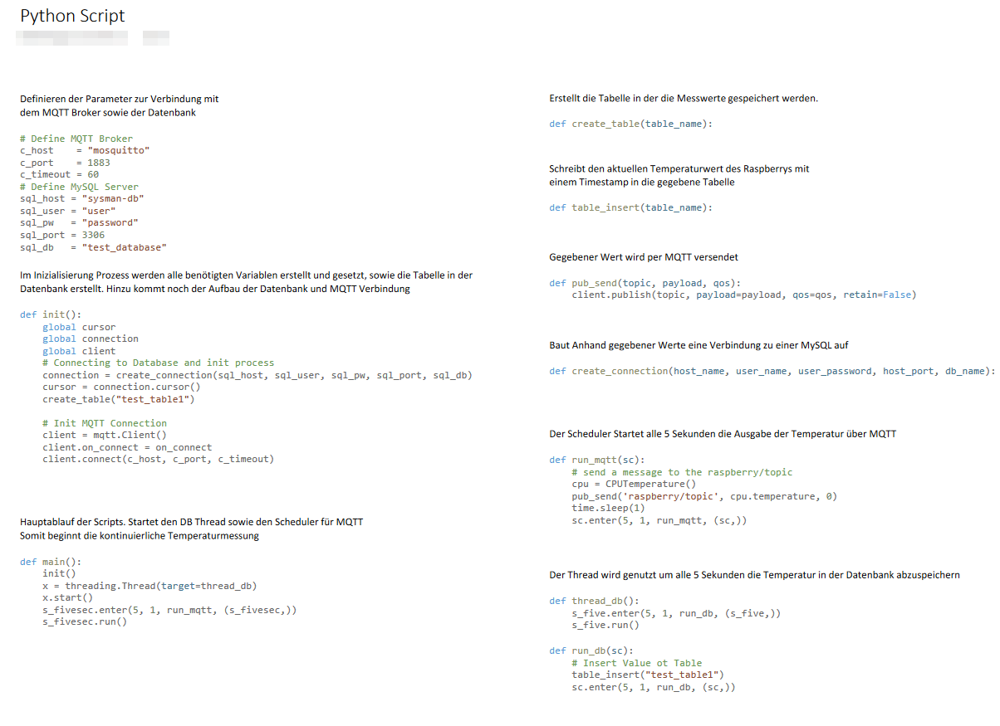
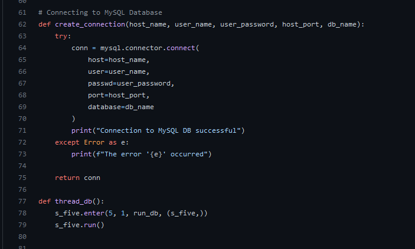
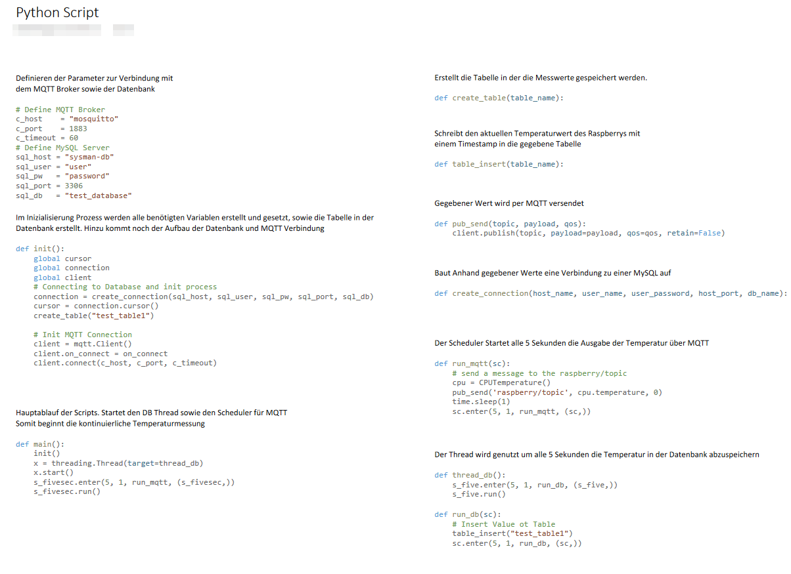

Unsere Doku
docker-compose.yml
Services:
• Probe:
o Wird erstellt aus „raspi-gpio/Dockerfile“
o Wartet bis die Datenbank gestartet ist
o Volumes werden gemappt zum auslesen der CPU Temperatur
o Verbunden mit dem Dockernetzwerk „python-netzwerk“
• Web:
o Nutzt nginx Image
o „./site-content“ beinhaltet alle Dateien für die Website
o Port 8080 wird freigeben um sich mit dem Webserver zu verbinden
o Verbunden mit dem Dockernetzwerk „python-netzwerk“
• DB:
o Nutzt Image hypriot/rpi-mysql
o Es wird eine Datenbank erstellt, sowie ein zugehöriger User
o Als Port wird hier 33306 genutzt
o Die Datenbank wird dann in dem Volume „my-db“ gespeichert
• Mosquitto:
o eclipse-mosquitto Image wird genutzt
o auf dem MQTT Port 1883
o das Directory „mqtt-broker“ wird gemappt um die Configuration zu übergeben
o Verbunden mit dem Dockernetzwerk „python-netzwerk“
• Grafana:
o grafana/grafana-oss wird genutzt zur Visualisierung
o hier wird eine Default User definiert sowie das Embedding in Websites erlaubt
o Verbunden mit dem Dockernetzwerk „python-netzwerk“
Dockerfile:
• python:alpine3.16 wird als Grundlage genutzt, da dieses eine schlanke Python Plattform bietet
• Es wird eine requirements.txt wird importiert, um im Anschluss alle benötigten Python Module herunterzuladen
• Nun wird das Python Script importiert und nach dem Start ausgeführt
 


